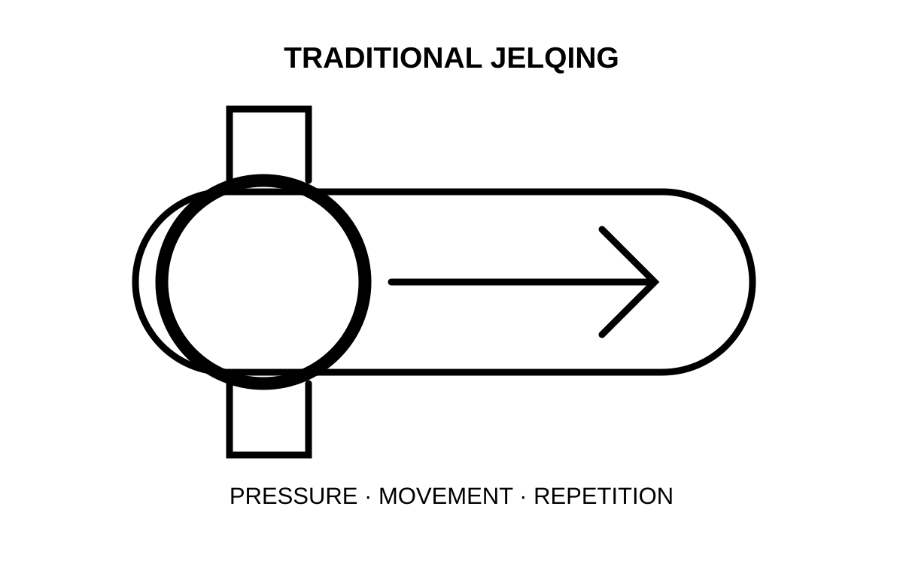
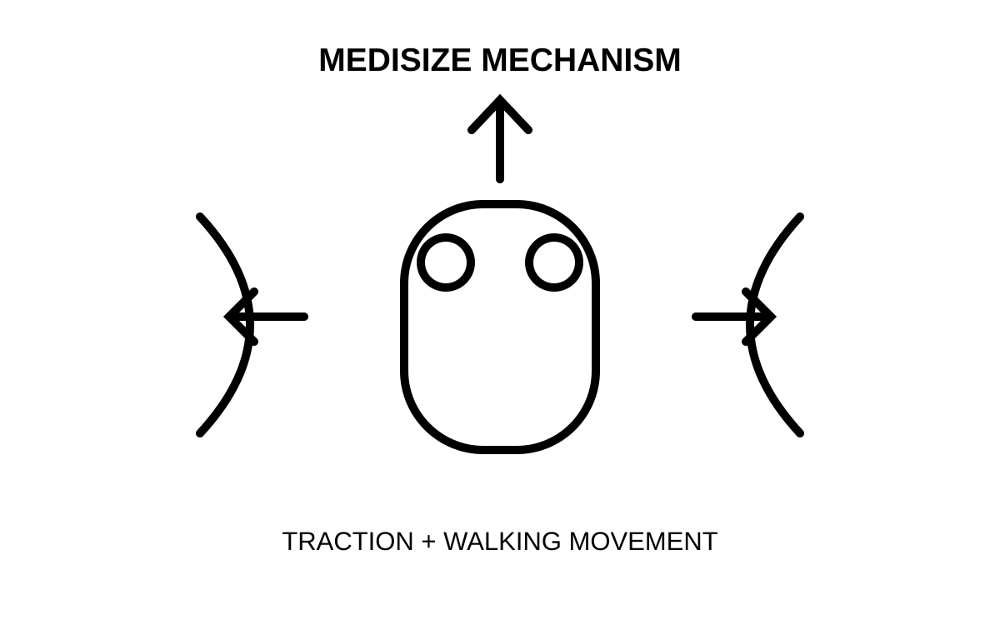

젤크운동이란? 고추 커지는 운동의 원리와 걸으면서 하는 메디사이즈 젤크운동기구
견인 + 전통 젤크운동 + 운동의 원리, 세 가지를 하나의 기구에 담았습니다
📌 3줄 요약
- 젤크운동(Jelqing) 은 손으로 음경을 감싸 뿌리에서 귀두 방향으로 밀어주는 동작을 반복하는 전통 운동입니다. 영구적인 확대 효과는 아직 의학적으로 입증되지 않았습니다.
- 메디사이즈 젤크운동기구는 실리콘 볼의 견인과, 걸을 때 허벅지가 비벼 주는 젤크 동작을 결합한 착용형 운동기구입니다. 고객들은 '젤크사이즈', '메젤사'라고도 부릅니다.
- 핵심은 세게 당기는 것이 아니라 자극과 휴식을 반복하며 꾸준히 이어갈 수 있는 강도를 찾는 것입니다.
팔은 덤벨을 들면 굵어지고, 허벅지는 스쿼트를 하면 단단해집니다.
그럼 고추는요?
남자라면 한 번쯤 진지하게 떠올려 본 질문입니다. 웃자고 하는 얘기 같지만, 이 질문 하나 때문에 밤늦게까지 화면을 넘겨 본 분들이 생각보다 많습니다.
먼저 솔직하게 말씀드리겠습니다.
음경은 팔이나 허벅지 같은 근육이 아닙니다. 무게를 올린다고 그만큼 자라는 조직이 아닙니다.
그런데도 오랫동안 남자들 사이에서 꾸준히 전해져 온 운동이 있습니다.
바로 젤크운동(Jelqing) 입니다.
메디사이즈 젤크운동기구 는 여기서 질문 하나를 던졌습니다.
"매일 손으로 따로 시간을 내서 해야 하는 이 동작을, 그냥 걸으면서 할 수는 없을까?"
메디사이즈 젤크운동기구는 바로 이 질문에서 시작됐습니다.
1. 젤크운동이란 무엇이고, 어떻게 하나요?
젤크운동(Jelqing Exercise)은 엄지와 검지로 OK 모양을 만들어 음경을 감싸고, 뿌리에서 귀두 방향으로 부드럽게 밀어주는 동작을 반복하는 운동입니다.
뜯어 보면 결국 세 가지입니다.
- 감싸는 압력
- 한 방향으로 흐르는 움직임
- 그리고 반복

2. 젤크운동, 정말 고추가 커지나요?
젤크운동으로 음경이 영구적으로 커진다는 효과는 아직 의학적으로 입증되지 않았습니다. 그리고 무리한 압박과 반복적인 마찰은 통증, 멍, 피부 손상으로 이어질 수 있습니다.
그렇다면 메디사이즈는 왜 젤크운동에 주목했을까요?
효과에 대한 소문 때문이 아닙니다. 동작의 구조 때문입니다.
감싸고, 한 방향으로 밀고, 반복하는 것. 이 구조라면 굳이 손이 아니어도 만들 수 있겠다고 생각했습니다.
3. 메디사이즈 젤크운동기구는 어떤 원리로 작동하나요?
메디사이즈 젤크운동기구는 ① 실리콘 볼의 견인, ② 보행 중 허벅지가 만드는 젤크 동작, ③ 자극과 휴식을 반복하는 운동의 원리를 결합한 착용형 운동기구입니다.
그래서 메디사이즈는 스스로를 '견인기'가 아니라 운동기구라고 부릅니다.
① 견인 — 실리콘 볼이 스프링이 됩니다
메디사이즈는 실리콘 본체와 실리콘 밴드, 그리고 실리콘 볼로 이루어져 있습니다.
볼을 하나씩 넣을 때마다 볼이 스프링처럼 작용하면서 음경을 일정한 방향으로 당겨주는 힘이 생깁니다. 이것이 견인(Traction) 입니다.
여기에는 두 가지 설계 원칙이 있습니다.
- 링이 아니라 볼입니다. 살을 조여 파고드는 링 구조가 아니라, 볼의 탄성으로 힘을 만드는 구조입니다.
- 일부러 순하게 만들었습니다. 장력이 강해도 약하게 느껴지도록 설계했습니다. 음경에 무리가 가지 않는 것이 먼저이기 때문입니다.
강도는 사용자가 정합니다. 볼의 개수와 실리콘 밴드를 감는 정도로 조절할 수 있습니다.
② 젤크 — 걸음이 손을 대신합니다
여기서부터가 메디사이즈만의 이야기입니다.
기구를 착용한 뒤 다리 사이 뒤쪽으로 넣고 걸으면, 걸음마다 허벅지가 앞뒤로 움직이면서 기구 주변을 비벼 줍니다.
손가락이 하던 일을 허벅지가 대신하는 것입니다.
출근길, 점심 산책, 마트 가는 길. 따로 시간을 내지 않아도 일상의 걸음이 운동 시간이 됩니다.
물론 손으로 직접 하는 젤크운동과 완전히 똑같지는 않습니다. 착용 위치, 걸음걸이, 체형, 입은 옷에 따라 느껴지는 자극도 달라집니다.

③ 운동의 원리 — 자극하고, 쉬고, 다시
헬스를 해 보신 분이라면 아실 겁니다. 몸은 운동하는 동안이 아니라 쉬는 동안 회복합니다. 매일 쉬지 않고 무게만 올리면 오히려 다칩니다.
메디사이즈는 이 원리를 설계의 기준으로 삼았습니다.
강제로 당기기만 해서는 안 되고, 몸이 회복할 시간도 함께 가야 한다는 것입니다.
그래서 메디사이즈는 5일 운동, 2일 휴식, 그리고 세트 사이 휴식을 권장합니다. 더 세게보다 꾸준히 이어갈 수 있는 강도를 찾는 것, 그것이 메디사이즈가 말하는 운동입니다.
4. 손으로 하는 젤크운동과 메디사이즈, 무엇이 다른가요?
| 구분 | 전통 젤크운동 | 메디사이즈 젤크운동기구 |
|---|---|---|
| 움직임 | 손가락 | 걸을 때의 허벅지 |
| 견인 | 없음 | 실리콘 볼의 탄성 |
| 운동 시간 | 따로 시간을 내야 함 | 일상생활과 함께 |
| 강도 조절 | 손의 힘 | 볼 개수, 밴드 감는 정도 |
| 주의할 점 | 과도한 압박·마찰 | 장시간 마찰·압박, 피부 상태 확인 |
손을 쓰지 않는다고 해서 안전이 저절로 보장되는 것은 아닙니다. 걷는 동안 마찰이 계속될 수 있으니, 피부 상태와 압박감은 늘 직접 확인하셔야 합니다.
5. 2년 넘게 쓴 고객이 말하는 '정체기'
메디사이즈를 2년 넘게 사용했다는 한 고객의 이야기입니다.
처음 3개월 동안 길이가 약 2cm 늘었다고 느꼈다고 합니다.
본인도 꽤 놀랐다고 했습니다. '이 속도라면 계속 좋아지겠지' 하는 기대도 생겼고요.
그런데 그다음부터는 아무 변화가 느껴지지 않았습니다.
약 6개월 동안 그랬고, 결국 7개월가량 손을 놓았습니다. 고객은 이 시기를 '정체기'라고 불렀습니다.
다시 시작할 때 고객이 바꾼 것은 강도가 아니었습니다.
자신의 착용 습관을 돌아봤고, 피부를 먼저 챙기기 시작했고, 기구가 제대로 착용됐는지 확인했습니다. 그리고 무엇보다 '적당한 압박감'과 '통증'을 구분하는 법을 익혔다고 합니다.
그 뒤로 다시 변화를 체감했다고 이야기했습니다.
다만 이 이야기는 어디까지나 한 사람의 경험입니다.
고객이 말한 2cm는 객관적인 측정으로 확인된 수치가 아니며, 일시적인 변화나 측정 조건의 차이일 가능성도 배제할 수 없습니다.
6. 메디사이즈 젤크운동기구, 어떻게 사용하나요?
하루 3~9시간 이내에서 1~3세트, 세트 사이 5~10분 휴식, 5일 운동 후 2일 휴식이 기본입니다.
기본 사용 가이드
- 하루 3~9시간 이내, 1~3세트
- 세트 사이 5~10분 휴식
- 5일 운동, 2일 휴식
- 소변을 볼 때와 잠잘 때는 반드시 풀어 주세요
- 음주 상태나 컨디션이 좋지 않을 때는 사용하지 마세요
오래 쓰는 사람들의 세 가지 습관
① 세게보다, 꾸준하게
강도와 시간은 반비례합니다. 볼을 많이 넣었다면 시간은 짧게, 볼을 적당히 넣었다면 시간은 길게. 무턱대고 강한 힘으로 오래 당겨도, 너무 약한 힘으로 오래 해도 원하는 변화는 오지 않을 수 있습니다.
② 피부가 먼저입니다
사용 전후로 피부 상태를 확인하고 청결하게 관리하세요. 붉어짐, 물집, 멍, 상처가 보이면 다 나을 때까지 쉬는 것이 맞습니다. 발진이 생겼다면 사용을 중단하세요.
③ 남의 숫자 말고, 내 몸을 기준으로
같은 기구라도 체형, 피부, 걸음걸이, 착용 위치에 따라 느낌이 다릅니다. 누군가의 볼 개수나 사용 시간을 그대로 따라 하지 마세요. 내 몸이 편안하게 이어갈 수 있는 강도가 정답입니다.
7. 메디사이즈 젤크운동기구 제품 정보
| 항목 | 내용 |
|---|---|
| 제품명 | 메디사이즈 젤크운동기구 (고객 호칭: 젤크사이즈, 메젤사) |
| 구성 | 실리콘 본체, 실리콘 밴드, 실리콘 볼 |
| 원리 | 실리콘 볼 견인 + 보행 중 허벅지 젤크 동작 + 자극·휴식 반복 |
| 강도 조절 | 볼 개수, 실리콘 밴드 감는 정도 |
| 착용 가능 크기 | 직경 2.8~4cm 이상, 둘레 8~14cm 이상 |
| 특허·인증 | 한국 포함 세계 8개국 특허, 중소기업청 혁신성장유형 벤처기업 선정 |
| 분류 | 운동 보조기구 (의료기기 아님) |
8. 자주 묻는 질문 (FAQ)
Q. 젤크운동, 정말 고추가 커지는 운동인가요?
크기 변화를 기대하며 많은 분들이 시도하는 운동입니다. 하지만 영구적인 확대 효과는 아직 충분한 과학적 근거로 입증되지 않았습니다. 그러나 . 젤크 운동이 오래된 행위인만큼 없어지지않앗다는것은 많은 가능성을 시사하겠습니다.
Q. 메디사이즈는 손으로 하는 젤크운동과 뭐가 다른가요?
전통 젤크운동이 손으로 감싸고 밀어주는 방식이라면, 메디사이즈는 실리콘 볼의 견인과 걸을 때의 허벅지 움직임을 함께 활용하도록 설계한 운동기구입니다.
Q. 착용하고 걷기만 하면 자동으로 젤크운동이 되나요?
걸을 때 허벅지 움직임으로 생기는 접촉과 마찰을 활용하도록 설계했습니다. 다만 실제 자극은 착용 상태와 체형에 따라 다르며, 손으로 하는 젤크운동과 똑같은 효과가 난다고 단정할 수는 없습니다.
Q. 메디사이즈는 실리콘 링이 들어간 제품인가요?
아닙니다. 링이 아니라 실리콘 볼 구조이며, 볼의 탄성으로 견인력을 만듭니다.
Q. 볼을 많이 넣을수록 더 좋은가요?
아닙니다. 볼 개수에 따라 견인 강도는 달라지지만, 많이 넣는다고 변화가 커진다는 근거는 없습니다. 무리하게 늘리면 통증과 상처의 위험만 커집니다.
Q. 잘 때도 착용해도 되나요?
안 됩니다. 수면 중과 소변을 볼 때는 반드시 풀어야 합니다.
Q. 누구나 같은 결과를 얻을 수 있나요?
아닙니다. 착용감과 몸의 반응은 사람마다 다르며, 영구적인 크기 변화는 보장되지 않습니다.
9. 메디사이즈가 전하고 싶은 이야기
남자의 자신감은 숫자 하나로 정해지지 않습니다.
내 몸을 이해하고, 무리하지 않고, 오래 이어갈 수 있는 습관을 만드는 것.
그게 진짜 운동이라고 메디사이즈는 생각합니다.
손으로 반복하던 젤크운동을 일상의 걸음 속으로.
세게 당기는 것보다 꾸준히 이어가는 것을.
그것이 메디사이즈 젤크운동기구가 가는 방향입니다.
※ 본 제품은 의료기기가 아닌 운동 보조기구입니다. 결과는 개인차가 있습니다.